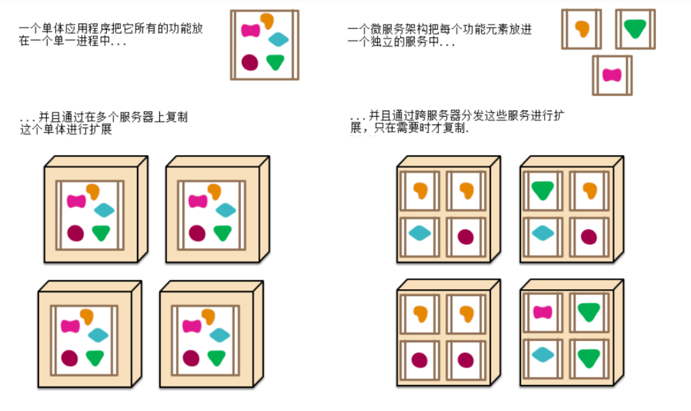
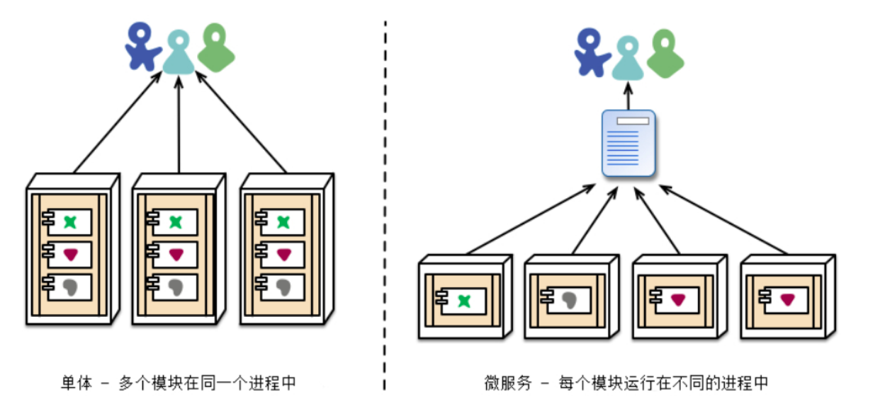
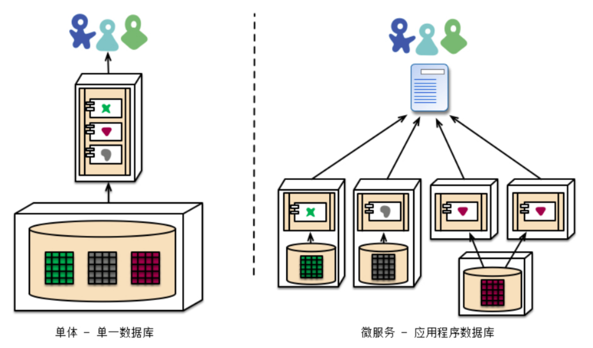
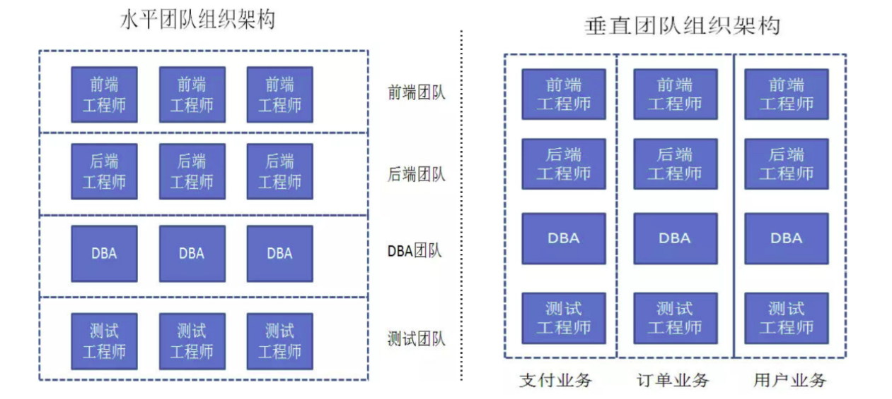

定义
Microservices (martinfowler.com)
微服务核心就是把传统的单机应用，根据业务将应用拆分成一个一个的服务，彻底的解耦，每一个服务都是提供特定的功能，一个服务只做一件事，类似进程，每个服务都能够单独部署，甚至可以拥有自己的数据库。这样一个一个小服务就是微服务。
比如说：传统的电商应用有订单、支付、库存、物流、积分等模块，我们可以根据业务模型对应的拆分为订单服务、支付服务、库存服务、物流服务、积分服务。
如果不拆分的时候，非核心业务出现bug，导致系统问题，内存溢出等，会导致整个服务宕机。但是拆分后只会影响其中一个微服务，核心应用不会受影响。这样可以最大限度减少对系统的影响。
微服务的特点
独立部署、灵活扩展
传统的单体架构以整个系统为单位进行部署，而微服务是以每一个独立组件为单位进行部署。


资源有效隔离
微服务涉及原则之一，就是每一个微服务拥有独立的数据源，例如微服务A想要读写微服务B的数据库，只能通过微服务B对外暴露的接口来完成，这样有效避免服务之间争用数据库和缓存资源所带来的问题。

团队组织架构调整
微服务设计思想的划分对团队组织架构有着一定的影响，使得团队组织架构的划分更倾向于垂直架构，一个业务由一个团队负责。

微服务架构
微服务架构风格是一种将单个应用程序作为一套小型服务开发的方法，每种应用程序都在自己的进行中进行，并于轻量级机制（通常是HTTP资源API）进行通信。这些服务是围绕业务功能构建的，可以通过全自动部署机制独立部署。这些服务可以用不同的编程语言编写，并使用不同的数据存储技术。
SOA架构强调的是异构系统之间的通信和解耦合，而微服务架构强调的是系统业务边界做细粒度的拆分和部署。
SOA：https://baike.baidu.com/item/SOA/2140650?fr=aladdin
面向服务架构（SOA）是一个组件模型，它将应用程序的不同功能单元（称为服务）进行拆分，并通过这些服务之间定义良好的接口和协议联系起来。接口是采用中立的方式进行定义的，它应该独立于实现服务的硬件平台、操作系统和编程语言。这使得构建在各种各样的系统中的服务可以以一种统一和通用的方式进行交互。
微服务架构是一个架构风格，提倡：
- 将一个单一应用程序开发为一组小型服务
- 每个服务运行在自己的进程中
- 服务间通过轻量级的通信机制（
http|rest|api） - 每个服务都能独立的部署
- 每个服务甚至可以拥有自己的数据库
微服务以及微服务架构的是两个完全不同的概念。
- 微服务强调的是服务的大小和对外提供的单一功能，
- 微服务架构是指把一个一个的微服务组合管理起来，对外提供一套完整的服务。
微服务的优缺点
优点
- 每个服务足够小，足够内聚，代码更加容易理解，专注一个业务功能点（对比传统应用，想要改几行代码需要了解整个系统）
- 开发简单，一个服务只干一个事情。
- 微服务能够被2-5个人的小团队开发，提高效率。
- 按需伸缩，服务松耦合，每个服务都能够独立开发部署
- 前后端分离，作为java开发人员，我们只要关心后端接口的性能以及安全性，不需要关注页面的人机交互(
H5工程师)根据前后端接口协议，根据入参，返回json的回参。 - 一个服务可以拥有自己的数据库，也可以多个服务连接同一个数据库。
缺点
- 增加了运维人员工作量以前只要部署一个war包，现在可能需要部署成百上千个war包 (
k8s+docker+jenkins) - 服务之间相互调用，增加通信成本
- 数据一致性问题（分布式事务问题）
- 性能监控等，问题定位等等
使用场景
合适
- 大型复杂的项目
- 快读迭代的项目
- 并发高的项目
不合适
- 业务稳定，就是修修bug，改改数据
- 迭代周期长，发版频率低的

...
...
Copyright 2021 sunfy.top ALL Rights Reserved